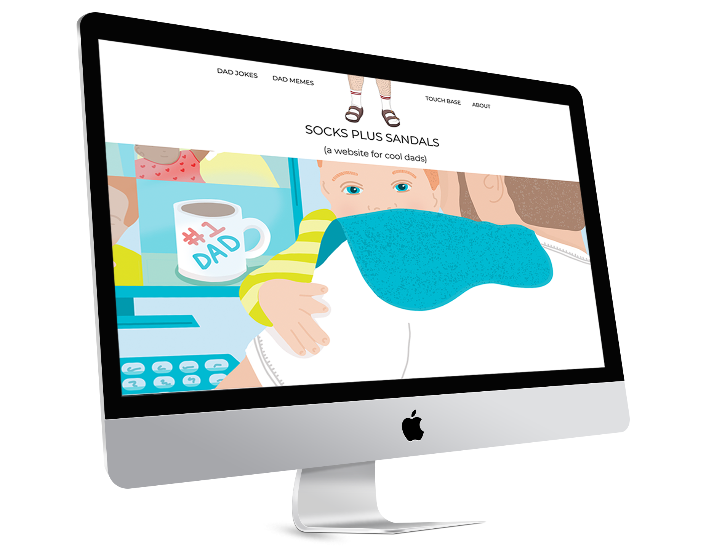

I'm Jesse Daniels! One of 186 in the United States according to the US Census, but one of a kind according to
my family. Working diligently to navigate a transition into tech. Currently a student in Code Louisville, I
completed the Front-End Web Development, C# & JavaScript programs.

This is my latest project showcasing my HTML, CSS, and JavaScript progress for Code Louisville. Socks Plus
Sandles is a website for, you guessed it, COOL DADS! If you rock Crocs with Socks this a website for you.This is an early Code Louisville front end project showcasing my HTML and CSS skills for Code
Louisville. Healthy Heart is a simple website to showcase some of my favorite low sodium products available.BAM is a company I designed from the ground up. Logo and website.